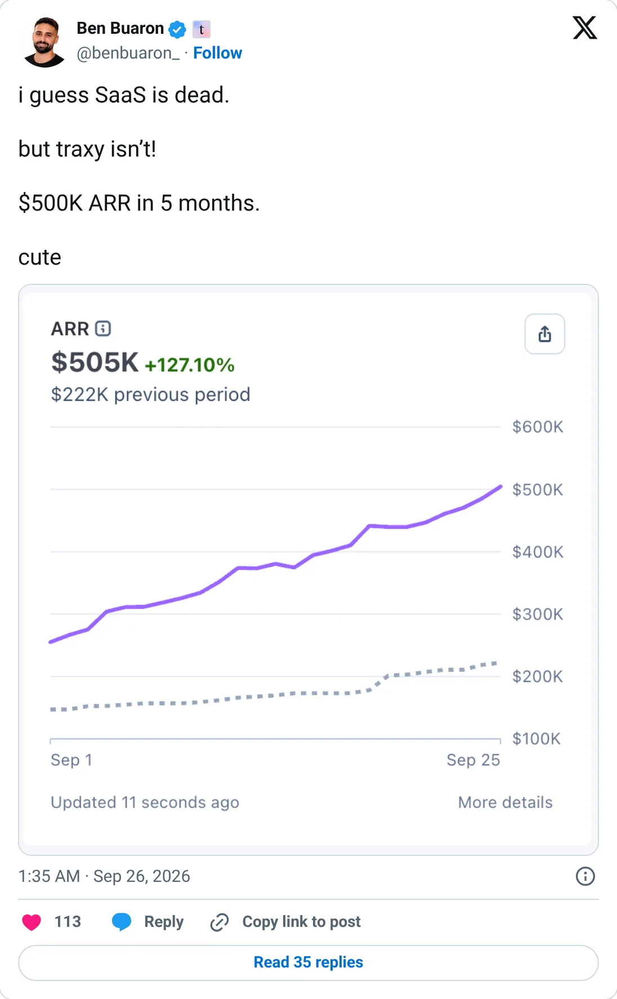
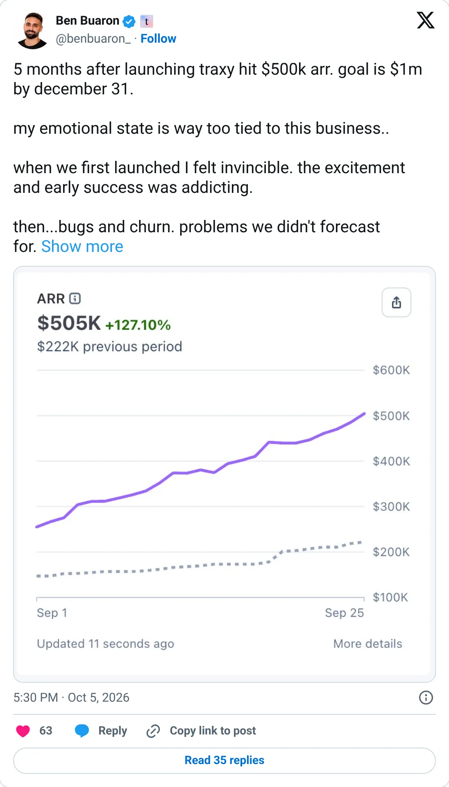

Build this shape
traxy.ai
A listener that turns a public buying signal into a lead.
$50.2K MRR
Should you build this
Traxy listens to public social posts and turns a buying signal into a lead list. It launched in 2026. Stripe says $50.2k MRR. The founder's '$500k ARR' tweet is lower than twelve times that MRR, which is the opposite of a pump. Gojiberry is the same idea at $424k MRR and already inside Y Combinator. Build a narrower listener: one trade, one phrase, one place people announce that they need help. Don't build another general LinkedIn agent.
Cited from the captured posts, shown below: the earliest captured post (Sep 26, 2026) is the source for “Founder: $500K ARR in 5 months”; the latest milestone (Oct 5, 2026) is the source for “Founder: traxy hit $500K ARR 5 months after launch; goal is $1M by Dec 31”.
Posts this is based on

Founder: $500K ARR in 5 months
Open on X

Founder: traxy hit $500K ARR 5 months after launch; goal is $1M by Dec 31
Open on X
What the product is
Lead lists built from social-media listening: it finds people publicly signalling buying intent. Launched 2026 in the US. TrustMRR shows MRR more than doubling between Aug and Sep 2026.
Public trail
- $3.4KVerified revenue in Apr 2026 (first month tracked) source
- $5.8KVerified revenue in May 2026 source
- $10.2KVerified revenue in Jun 2026 source
- $12KVerified revenue in Jul 2026 source
- $21.4KVerified revenue in Aug 2026 source
- •Founder: $500K ARR in 5 months source
- $45KVerified revenue in Sep 2026 (latest full month) source
- •Founder: traxy hit $500K ARR 5 months after launch; goal is $1M by Dec 31 source